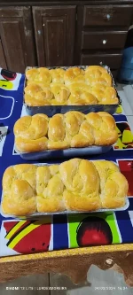

1h30 de preparo
Serve 10 pessoas aproximadamente
1) Misture ovos, açúcar, fermento, sal, margarina e óleo. Misturar bem e colocar o leite morno, acrescentar o trigo aos poucos até dar o ponto. Amassando bem a massa, deixei descansar por 20 minutos, e cubra bem
2) E se preferir ir no cilindro não uso o cilindro. Divida a massa no tamanho que prefere e faça os pãezinhos, uso 2 forma de pão deixei crescer até dobrar de tamanho se preferir pincele 1 gema com um colher rasa de leite assar em forno pré aquecido 180graus até dourarem.por 30 a 40 minutos Preferir pode colocar calda em cima ainda quente calda de açúcar e leite
3) (Obs) : Com relação aos modelos dos pães faça o que você achar mais prático. Eu faço assim porque acho mais prático
Fotos de alguns exemplos 👇.

Boa receita!
Segue um vídeo tutorial da receita